MF_01_Modelfree_Analysis
Load all data files and set working environment
In this chunk we load and set up the data.
First let us generate the data for this
`summarise()` has grouped output by 'Stim_verb'. You can override using the
`.groups` argument.
`summarise()` has grouped output by 'Stim_verb', 'Congruency'. You can override
using the `.groups` argument.
`summarise()` has grouped output by 'Stim_verb', 'GoNoGo'. You can override
using the `.groups` argument.
`summarise()` has grouped output by 'Stim_verb', 'StopTrl'. You can override
using the `.groups` argument.Simple Reaction Time Task
First we plot the reaction times for each task, only for the correct trials
Reaction Time Simple Reaction Time Task
First we plot the reaction times for the simple stimulus response task. We see a little more variability in the non-therapeutic stimulation conditions, but arguably no difference in RT.
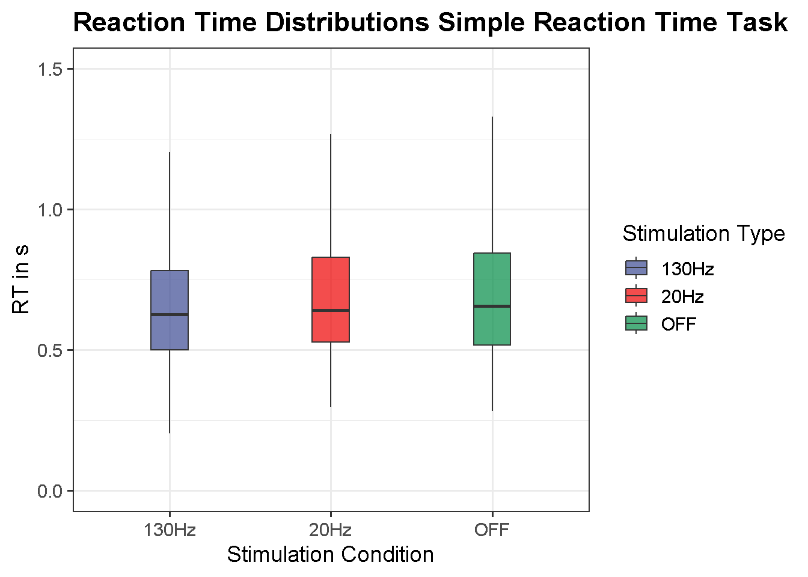
Errors Simple Reaction Time Task
We definitely see fewer error trials in the 20Hz condition here compared to the 130Hz condition
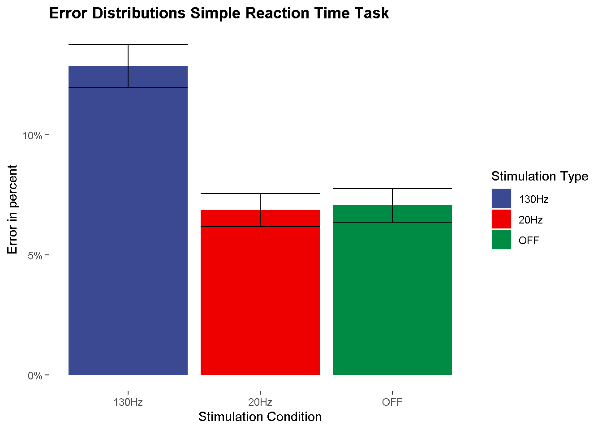
Delta Plot Simple Reaction Time Task
Very similar RTs and accuracies for the comparison between OFF and 20Hz stimulation. For the 130Hz stimulation we see that participants simply responded more impulsive and inaccurate.
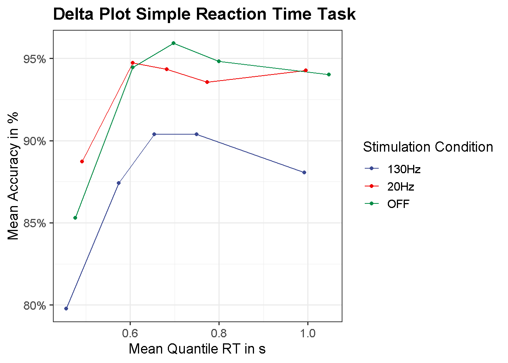
Reaction Time Analysis SRT
load(file = "E:/20Hz/Data/Modelle/shifted_log_SST.rda")
post_eff_srt <- fit_shifted_log_SST %>%
spread_draws(b_Intercept, b_StimConS20_SOFF, b_StimConS130_S20, sigma, ndt) %>%
mutate(Est_S130Hz = exp(b_Intercept + (-(2/3))*b_StimConS130_S20 + (1/3)*b_StimConS20_SOFF) + sigma/2 + ndt,
Est_S20Hz = exp(b_Intercept + (1/3)*b_StimConS130_S20 + (1/3)*b_StimConS20_SOFF) + sigma/2 + ndt,
Est_SOFF = exp(b_Intercept + (1/3)*b_StimConS130_S20 + (-(2/3))*b_StimConS20_SOFF) + sigma/2 + ndt,
S20_vs_S130 = Est_S20Hz - Est_S130Hz,
S20_vs_SOFF = Est_S20Hz - Est_SOFF) %>%
select(S20_vs_S130, S20_vs_SOFF) %>%
summarise_draws()
post_eff_srtAccuracy Analysis SRT
load(file = "E:/20Hz/Data/Modelle/shifted_log_SST.rda")
post_eff_log_SST <- fit_logReg_SST %>%
spread_draws(b_Intercept, b_StimConS20_SOFF, b_StimConS130_S20) %>%
mutate(Est_S130Hz = plogis(b_Intercept + (-(2/3))*b_StimConS130_S20 + (1/3)*b_StimConS20_SOFF),
Est_S20Hz = plogis(b_Intercept + (1/3)*b_StimConS130_S20 + (1/3)*b_StimConS20_SOFF),
Est_SOFF = plogis(b_Intercept + (1/3)*b_StimConS130_S20 + (-(2/3))*b_StimConS20_SOFF),
S20_vs_S130 = Est_S20Hz - Est_S130Hz,
S20_vs_SOFF = Est_S20Hz - Est_SOFF) %>%
summarise_draws()
post_eff_log_SST# A tibble: 8 x 10
variable mean median sd mad q5 q95 rhat ess_b~1 ess_t~2
<chr> <dbl> <dbl> <dbl> <dbl> <dbl> <dbl> <dbl> <dbl> <dbl>
1 b_Inter~ -2.42 -2.45e+0 0.354 0.335 -2.94 -1.79 1.00 6159. 13104.
2 b_StimC~ 0.0120 -2.27e-3 0.493 0.470 -0.774 0.841 1.00 14878. 21459.
3 b_StimC~ -0.736 -7.39e-1 0.220 0.206 -1.09 -0.374 1.00 20660. 21561.
4 Est_S13~ 0.136 1.24e-1 0.0569 0.0462 0.0680 0.242 1.00 6814. 13130.
5 Est_S20~ 0.0707 6.35e-2 0.0323 0.0242 0.0344 0.130 1.00 7260. 13652.
6 Est_SOFF 0.0688 6.33e-2 0.0280 0.0215 0.0359 0.120 1.00 11281. 16386.
7 S20_vs_~ -0.0650 -5.98e-2 0.0319 0.0268 -0.123 -0.0244 1.00 9514. 14291.
8 S20_vs_~ 0.00185 -1.28e-4 0.0347 0.0275 -0.0484 0.0583 1.00 14836. 16604.
# ... with abbreviated variable names 1: ess_bulk, 2: ess_tailFlanker Task
Reaction Time Flanker Task
Looking at the flanker data, there does seem to be some kind of main effect, with faster RTs in the 130Hz condition, but nothing else beside that.
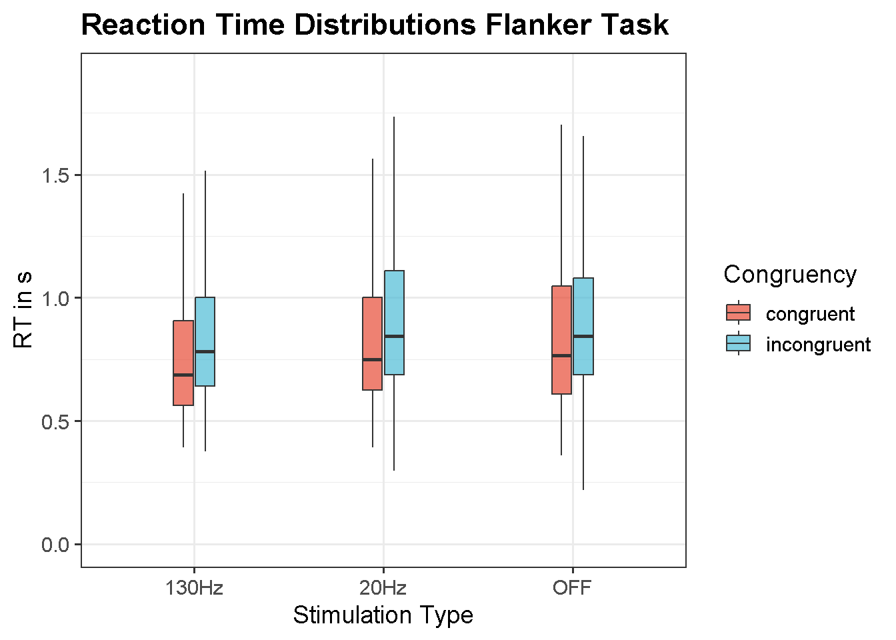
Congruency Sequence Effects Flanker Task
Does not look like we have something here to be honest - but still worth to test. Maybe no CSE for 130Hz?
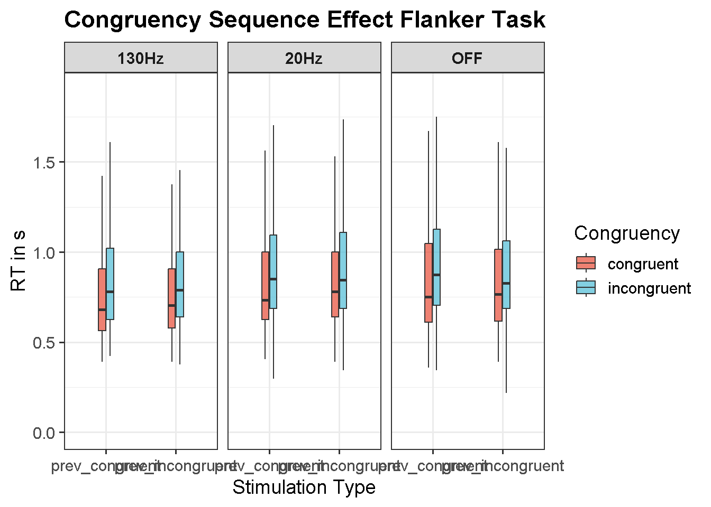
Errors Flanker Task
We definitely see improvements across the board in the 20 Hz data here
`summarise()` has grouped output by 'Stim_verb'. You can override using the
`.groups` argument.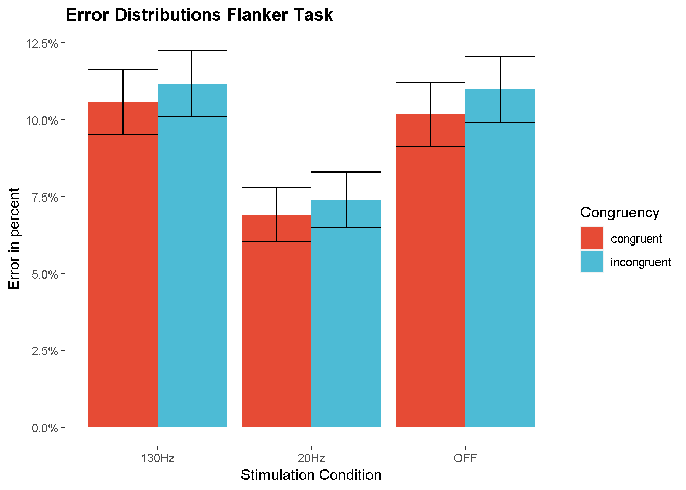
Delta Plot Flanker Task
In the flanker task, it appears that participants on 20Hz overall responded more slowely and accurately, particulary on the incongruent trials
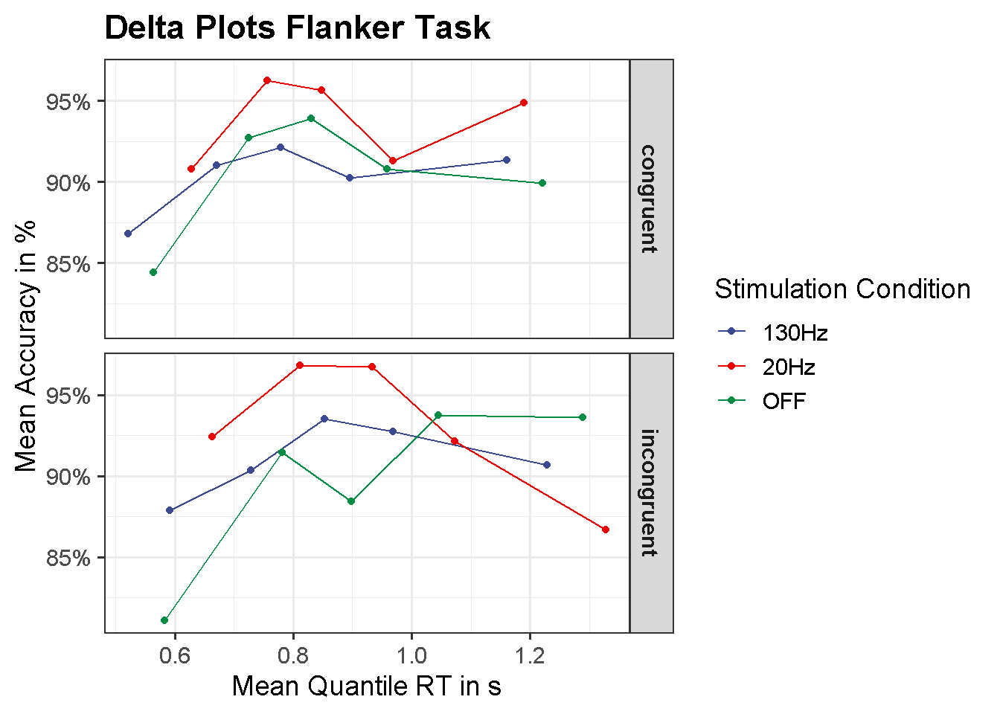
Reaction Time Analysis Flanker Task
load(file = "E:/20Hz/Data/Modelle/shifted_log_flanker.rda")
post_eff_flanker <- fit_shifted_log_flanker %>%
spread_draws(b_Intercept, b_Contrast_FCongruency, b_Contrast_FStim_20v130, b_Contrast_FStim_20vOFF,
b_Contrast_FStroop_20v130, b_Contrast_FStroop_20vOFF, sigma, ndt) %>%
mutate(Est_S130_I = exp(b_Intercept + (-0.5)*b_Contrast_FCongruency + (-(2/3))*b_Contrast_FStim_20v130 + (1/3)*b_Contrast_FStim_20vOFF
+ (-(1/3))*b_Contrast_FStroop_20v130 + (1/6)*b_Contrast_FStroop_20vOFF) + sigma/2 + ndt,
Est_S130_C = exp(b_Intercept + (0.5)*b_Contrast_FCongruency + (-(2/3))*b_Contrast_FStim_20v130 + (1/3)*b_Contrast_FStim_20vOFF
+ (1/3)*b_Contrast_FStroop_20v130 + (-(1/6))*b_Contrast_FStroop_20vOFF) + sigma/2 + ndt,
Est_S20_I = exp(b_Intercept + (-0.5)*b_Contrast_FCongruency + (1/3)*b_Contrast_FStim_20v130 + (1/3)*b_Contrast_FStim_20vOFF
+ (1/6)*b_Contrast_FStroop_20v130 + (1/6)*b_Contrast_FStroop_20vOFF) + sigma/2 + ndt,
Est_S20_C = exp(b_Intercept + (0.5)*b_Contrast_FCongruency + (1/3)*b_Contrast_FStim_20v130 + (1/3)*b_Contrast_FStim_20vOFF
+ (-(1/6))*b_Contrast_FStroop_20v130 + (-(1/6))*b_Contrast_FStroop_20vOFF) + sigma/2 + ndt,
Est_SOFF_I = exp(b_Intercept + (-0.5)*b_Contrast_FCongruency + (1/3)*b_Contrast_FStim_20v130 + (-(2/3))*b_Contrast_FStim_20vOFF
+ (1/6)*b_Contrast_FStroop_20v130 + (-(1/3))*b_Contrast_FStroop_20vOFF) + sigma/2 + ndt,
Est_SOFF_C = exp(b_Intercept + (0.5)*b_Contrast_FCongruency + (1/3)*b_Contrast_FStim_20v130 + (-(2/3))*b_Contrast_FStim_20vOFF
+ (-(1/6))*b_Contrast_FStroop_20v130 + (1/3)*b_Contrast_FStroop_20vOFF) + sigma/2 + ndt,
Congruency = (Est_S20_I + Est_S130_I + Est_SOFF_I)/3 - (Est_S20_C + Est_S130_C + Est_SOFF_C)/3,
S20_vs_S130 = (Est_S20_I + Est_S20_C)/2 - (Est_S130_I + Est_S130_C)/2,
S20_vs_SOFF = (Est_S20_I + Est_SOFF_C)/2 - (Est_SOFF_I + Est_SOFF_C)/2,
Stroop_S20_vs_S130 = (Est_S20_I - Est_S20_C) - (Est_S130_I - Est_S130_C),
Stroop_S20_vs_SOFF =(Est_S20_I - Est_SOFF_C) - (Est_SOFF_I - Est_SOFF_C)) %>%
select(Congruency, S20_vs_S130, S20_vs_SOFF, Stroop_S20_vs_S130, Stroop_S20_vs_SOFF) %>%
summarise_draws()
post_eff_flanker # A tibble: 5 x 10
variable mean median sd mad q5 q95 rhat ess_b~1 ess_t~2
<chr> <dbl> <dbl> <dbl> <dbl> <dbl> <dbl> <dbl> <dbl> <dbl>
1 Congruency 80.3 80.3 18.0 17.0 51.1 110. 1.00 18776. 23757.
2 S20_vs_S130 55.1 55.4 39.3 37.1 -9.03 119. 1.00 15931. 21026.
3 S20_vs_SOFF 10.7 10.5 12.1 11.5 -8.58 31.0 1.00 20798. 25305.
4 Stroop_S20_vs_S130 -3.61 -3.88 18.9 18.2 -33.8 27.6 1.00 40321. 31338.
5 Stroop_S20_vs_SOFF 21.4 20.9 24.2 23.0 -17.2 62.0 1.00 20798. 25305.
# ... with abbreviated variable names 1: ess_bulk, 2: ess_tailAccuracy Analysis Flanker Task
load(file = "E:/20Hz/Data/Modelle/log_reg_flanker.rda")
post_eff_logreg_flanker <- fit_log_flanker %>%
spread_draws(b_Intercept, b_Contrast_FCongruency, b_Contrast_FStim_20v130, b_Contrast_FStim_20vOFF,
b_Contrast_FStroop_20v130, b_Contrast_FStroop_20vOFF) %>%
mutate(Est_S130_I = plogis(b_Intercept + (-0.5)*b_Contrast_FCongruency + (-(2/3))*b_Contrast_FStim_20v130 + (1/3)*b_Contrast_FStim_20vOFF
+ (-(1/3))*b_Contrast_FStroop_20v130 + (1/6)*b_Contrast_FStroop_20vOFF),
Est_S130_C = plogis(b_Intercept + (0.5)*b_Contrast_FCongruency + (-(2/3))*b_Contrast_FStim_20v130 + (1/3)*b_Contrast_FStim_20vOFF
+ (1/3)*b_Contrast_FStroop_20v130 + (-(1/6))*b_Contrast_FStroop_20vOFF),
Est_S20_I = plogis(b_Intercept + (-0.5)*b_Contrast_FCongruency + (1/3)*b_Contrast_FStim_20v130 + (1/3)*b_Contrast_FStim_20vOFF
+ (1/6)*b_Contrast_FStroop_20v130 + (1/6)*b_Contrast_FStroop_20vOFF),
Est_S20_C = plogis(b_Intercept + (0.5)*b_Contrast_FCongruency + (1/3)*b_Contrast_FStim_20v130 + (1/3)*b_Contrast_FStim_20vOFF
+ (-(1/6))*b_Contrast_FStroop_20v130 + (-(1/6))*b_Contrast_FStroop_20vOFF),
Est_SOFF_I = plogis(b_Intercept + (-0.5)*b_Contrast_FCongruency + (1/3)*b_Contrast_FStim_20v130 + (-(2/3))*b_Contrast_FStim_20vOFF
+ (1/6)*b_Contrast_FStroop_20v130 + (-(1/3))*b_Contrast_FStroop_20vOFF),
Est_SOFF_C = plogis(b_Intercept + (0.5)*b_Contrast_FCongruency + (1/3)*b_Contrast_FStim_20v130 + (-(2/3))*b_Contrast_FStim_20vOFF
+ (-(1/6))*b_Contrast_FStroop_20v130 + (1/3)*b_Contrast_FStroop_20vOFF),
Congruency = (Est_S20_I + Est_S130_I + Est_SOFF_I)/3 - (Est_S20_C + Est_S130_C + Est_SOFF_C)/3,
S20_vs_S130 = (Est_S20_I + Est_S20_C)/2 - (Est_S130_I + Est_S130_C)/2,
S20_vs_SOFF = (Est_S20_I + Est_SOFF_C)/2 - (Est_SOFF_I + Est_SOFF_C)/2,
Stroop_S20_vs_S130 = (Est_S20_I - Est_S20_C) - (Est_S130_I - Est_S130_C),
Stroop_S20_vs_SOFF =(Est_S20_I - Est_SOFF_C) - (Est_SOFF_I - Est_SOFF_C)) %>%
select(Congruency, S20_vs_S130, S20_vs_SOFF, Stroop_S20_vs_S130, Stroop_S20_vs_SOFF) %>%
summarise_draws()
post_eff_logreg_flanker# A tibble: 5 x 10
variable mean median sd mad q5 q95 rhat ess_b~1 ess_t~2
<chr> <dbl> <dbl> <dbl> <dbl> <dbl> <dbl> <dbl> <dbl> <dbl>
1 Congruen~ 0.0203 0.0187 0.0318 0.0247 -0.0266 0.0729 1.00 19974. 23080.
2 S20_vs_S~ -0.0280 -0.0225 0.0436 0.0342 -0.106 0.0305 1.00 19888. 22102.
3 S20_vs_S~ -0.0117 -0.00820 0.0289 0.0224 -0.0626 0.0276 1.00 23754. 23850.
4 Stroop_S~ -0.00228 -0.00172 0.0550 0.0429 -0.0903 0.0845 1.00 28476. 25285.
5 Stroop_S~ -0.0234 -0.0164 0.0579 0.0449 -0.125 0.0552 1.00 23754. 23850.
# ... with abbreviated variable names 1: ess_bulk, 2: ess_tailGo NoGo Task
Reaction Time Go-NoGo Task
Arguably, slightly slower performance on the NoGo - Go trials for the 20Hz participants?
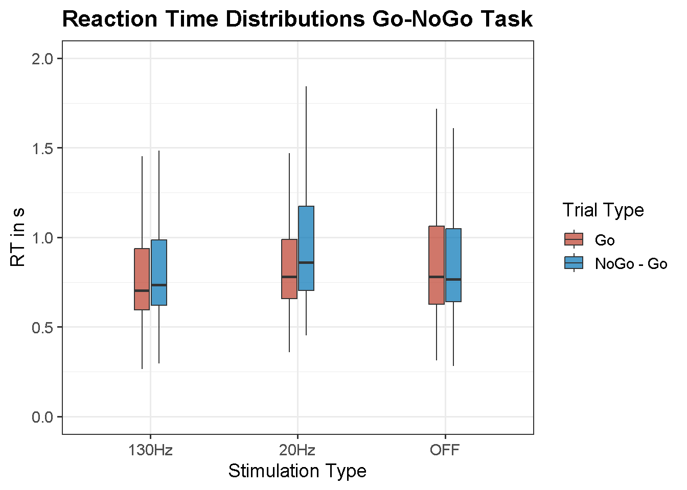
Errors Go-NoGo Task
Across the board improvements in the Go-NoGo task
`summarise()` has grouped output by 'Stim_verb'. You can override using the
`.groups` argument.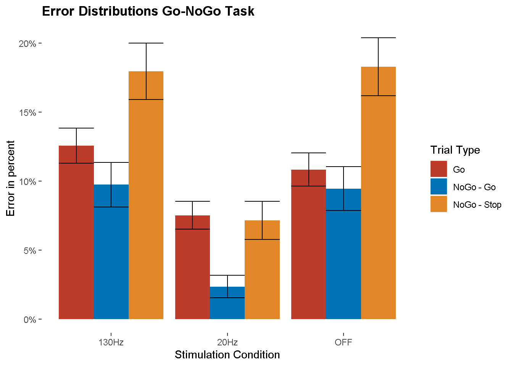
Delta Plot Go-NoGo Task
It is hard to say where participants got their competitive advantage. They responded slightly slower and more accurately on the Go trials, but on the Stop Go trials they responded equally fast as Off stimulation. A parsimonious explanation would be improved cognitive control, i.e. the ability to override automatic response tendencies.
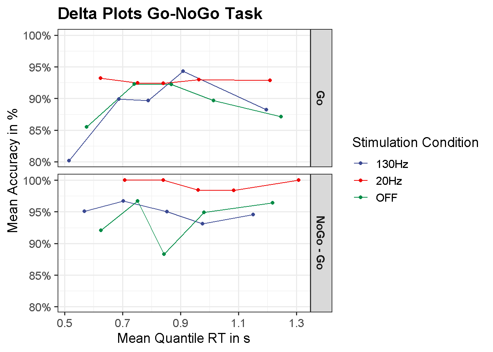
Stop Signal Task
Reaction Time Stop-Signal Task Arguably much more variability on the Stop trials in the 130Hz participants.
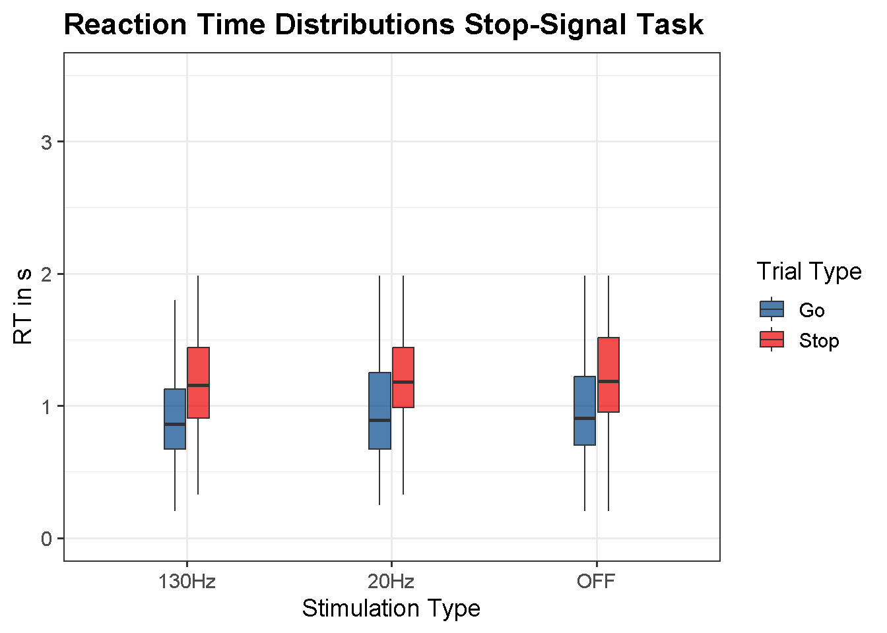
Because this is not actually what we are after, we will also claculate the Stop-Signal reaction time
`summarise()` has grouped output by 'Part_nr'. You can override using the
`.groups` argument.
`summarise()` has grouped output by 'Part_nr'. You can override using the
`.groups` argument.
Adding missing grouping variables: `Part_nr`
New names:# A tibble: 3 x 2
Stim_verb mean
<chr> <dbl>
1 130Hz 0.611
2 20Hz 0.695
3 OFF 0.687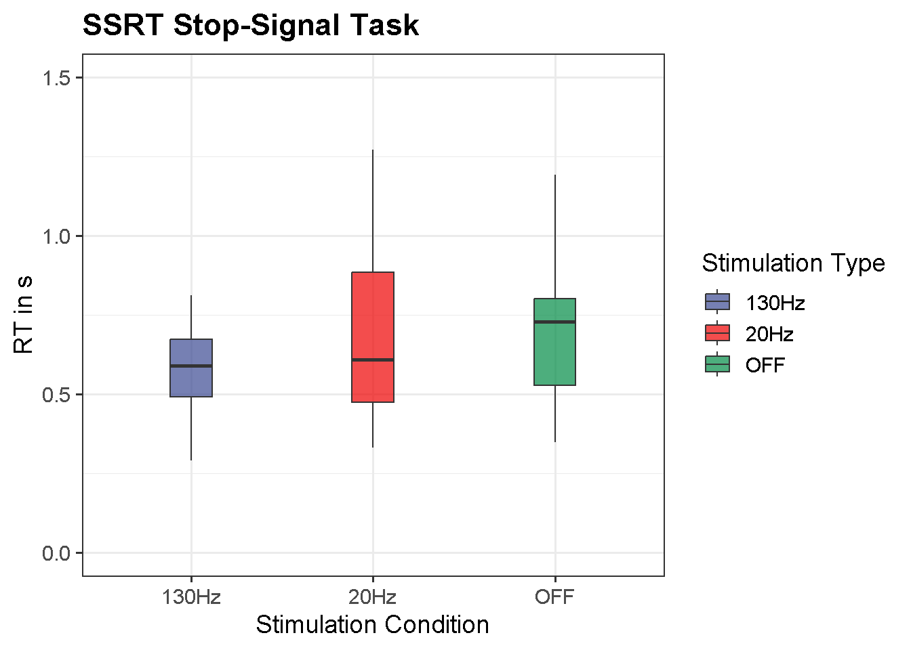
Errors Stop-Signal Task
Slightly better performance on the Go trials in the 20Hz condition as compared to the 130Hz conditions
`summarise()` has grouped output by 'Stim_verb'. You can override using the
`.groups` argument.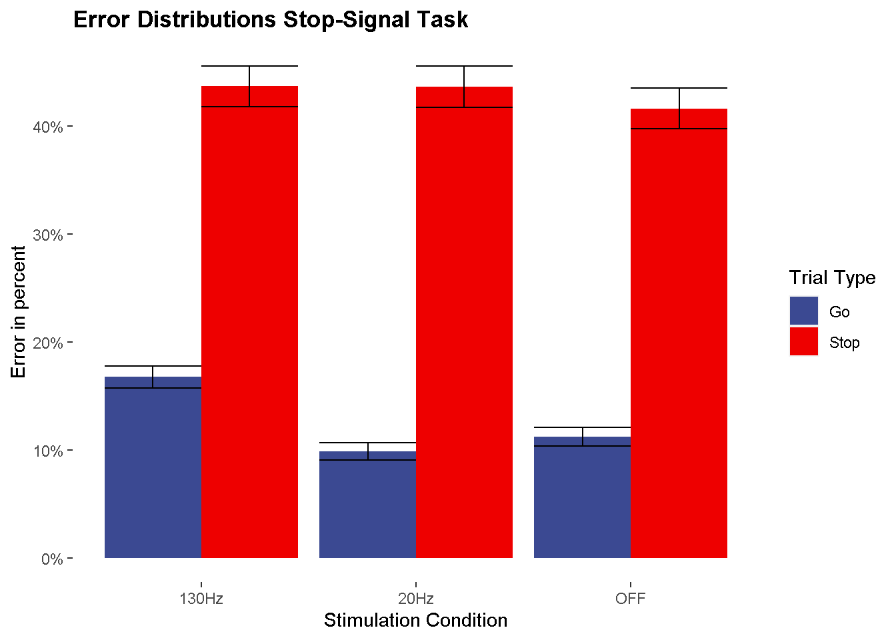
Delta Plot Stop Signal Task
Not really much to see other than that I should exclude some trials that are obvieously way too long
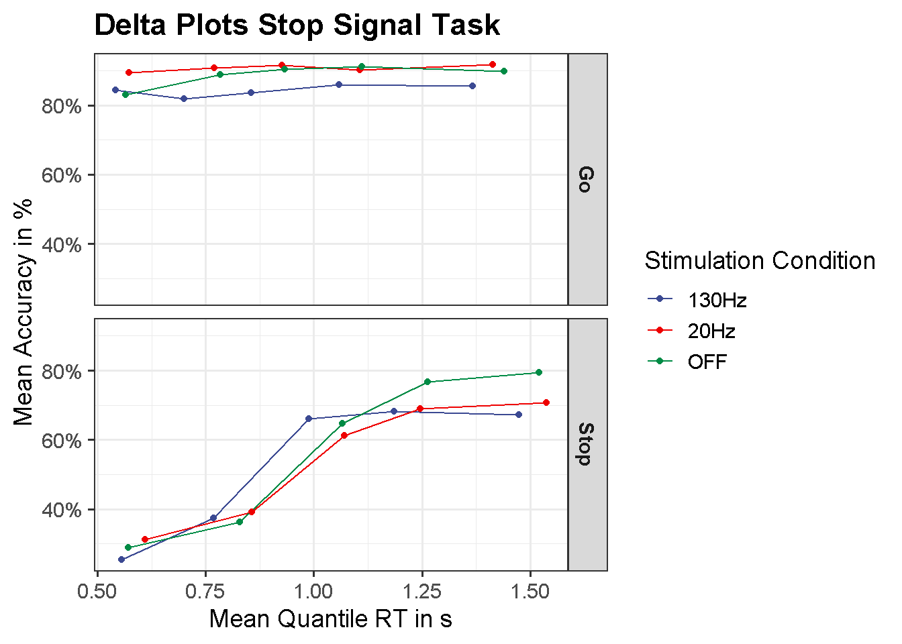